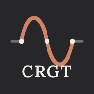

CRGT Host
CRGT Sample Workstation as an iPad app, with the iPad's MIDI.
Safari gives web pages no MIDI, and neither does any other iPad browser. CRGT Host is the same CRGT running inside a small iPad app, so it gets the iPad's own MIDI ports. It keeps CRGT on the iPad, so it opens with no connection. When it's online, it updates CRGT from this site.
- IDAM MIDI HostFrom a Mac by cable, e.g. Ableton Live
- USB & BluetoothKeyboards, pads, controllers
- Wi-Fi MIDIA Mac's network session, no cable
- Other iPad appsThey play CRGT through the port named CRGT
Install it
On the iPad · Swift Playground
Free, no Mac needed. CRGT Host runs from inside Swift Playground.
- Install Apple's Swift Playground from the App Store (free, iPadOS 18 or later).
- On the iPad, tap Download CRGT Host above, then Download when Safari asks.
- In Files › Downloads, tap the .zip. It unzips to CRGTHost.swiftpm. Move that into iCloud Drive › Playgrounds so Swift Playground lists it, then tap it to open.
- Wait for the first build. Hide the App Preview with Show Preview so only one CRGT is running, then tap Run App. CRGT opens in its own window.
- To stop it, tap the red Swift button at the top right, then Stop.
From a Mac · Xcode
A real app on the home screen. Uses the same cable as IDAM.
- Download the .zip on the Mac, unzip it, and double-click CRGTHost.swiftpm. It opens in Xcode.
- Add your Apple ID in Xcode › Settings › Accounts. A free one gives you a Personal Team.
- Connect the iPad, unlock it and tap Trust. Pick the iPad as the run destination at the top of the window. In the app's Signing settings, choose your team.
- On the iPad, turn on Settings › Privacy & Security › Developer Mode. The iPad restarts.
- Press ⌘R. The first time, trust yourself on the iPad: Settings › General › VPN & Device Management, choose your Apple ID, then Trust. The app's icon is named CRGT.
With a free Apple ID the app stops opening after 7 days. Run it from Xcode again and your sessions are still there.
Your sessions: the app keeps its own sessions, apart from Safari and the home-screen CRGT. To move one over, in the old one use SESSION › EXPORT CURRENT…, then in CRGT Host use SESSION › IMPORT….
Play it from Ableton on a Mac (IDAM)
- Connect the iPad to the Mac with its cable, unlock it, and tap Trust if asked. Open CRGT Host. MIDI turns on by itself.
- On the Mac, open Audio MIDI Setup › Window › Show Audio Devices and click Enable under the iPad.
- In CRGT Host, tap MIDI ▾: IDAM MIDI Host is listed under INPUTS.
- In Live, open Settings › Link, Tempo & MIDI. For the iPad's output port, turn Track on.
- On a MIDI track, set MIDI To to the iPad. Set ROUTING in CRGT to PLAYER ON SCREEN, or to CHANNEL = PLAYER so channel 1 plays player 1, channel 2 plays player 2, and so on.
- To hear CRGT inside Live, set the iPad as Live's Audio Input Device, then monitor an audio track set to In.
To turn knobs from Live: in a clip, open Envelopes › MIDI Ctrl and draw a controller. In CRGT, tap MIDI LEARN and touch the knob, then play the clip.
Without a cable
- Wi-Fi MIDI from a Mac
- In CRGT Host, tap MIDI ▾ › WI-FI MIDI so it shows ON. The first time, allow Local Network. On the Mac, open Audio MIDI Setup › Window › Show MIDI Studio and double-click Network. Under My Sessions, add a session with + and tick it. Choose the iPad under Directory and click Connect. In Live, turn on Track for Network Session 1.
- Bluetooth from a Mac
- In CRGT Host, tap MIDI ▾ › MAC OVER BLUETOOTH… and turn on advertising. On the Mac, in MIDI Studio, click the Bluetooth button (Configure Bluetooth) and connect to the iPad.
- Bluetooth keyboards and controllers
- In CRGT Host, tap MIDI ▾ › BLUETOOTH DEVICES… and tap the device to connect it.
- Other iPad apps
- Sequencers and hosts such as AUM or Loopy Pro can send MIDI to the port named CRGT.
If something is off
- IDAM MIDI Host is not in the list
- Keep the iPad unlocked, and click Enable again in Audio MIDI Setup: it switches off when the cable comes out. The list updates as soon as the port appears.
- MIDI arrives but there is no sound
- Tap anywhere in CRGT once. Check that the player has a sample. With IDAM on, the iPad's sound goes to the Mac.
- Timing feels loose
- Set LATENCY to LOW in CRGT's AUDIO window. CRGT doesn't follow Live's tempo yet, so set the same BPM in both.
- Wi-Fi MIDI never connects
- Check Settings › Privacy & Security › Local Network for the app, and that both devices are on the same network.